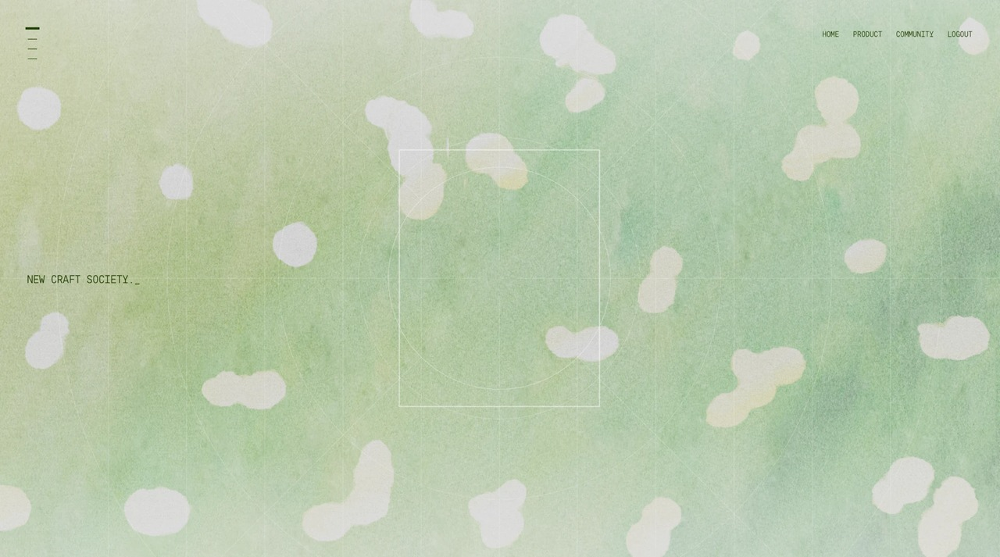
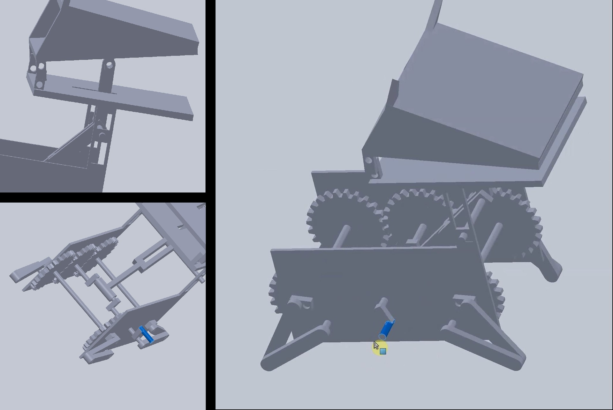

Scope
2026A Gen Z cultural platform imagined as one AI-native brand world. Identity, music, fashion, and digital drops. Made with GPT Image 2.

Octocrab
2026An octagonal crab drawn in ASCII. Glyphs and dither become pearl armor, neon claws, and a glowing core. Made with GPT Image 2.

Midjourney
2026Exploring different visual styles, moods, and worlds through prompt-driven image and video generation in Midjourney.


Luma
2026A solo concept exploring how neuroaesthetic interaction can support emotional regulation. A trauma-informed, nonverbal alternative to conventional wellness apps, inspired by Your Brain on Art. Made with Figma Make.

Robot Operator Console
2026Sitting at the console of a working robot. A humanoid runs a warehouse pick-and-place loop while the control interface reads its vitals: battery, joint load, gait stability, alarms that wait to be acknowledged. Watch from above, through its eyes, or in VR. Made with Unity and Claude Code.
New Craft Society
2026A home for design process, not just finished pieces. Drop in rough work as it happens and the case study writes itself. Freelance, in active development: I am both a designer on it and one of the product engineers building it.
Visit the site ↗

TickerPulse
2025An AI trading terminal that monitors real-time news sentiment and explains the why behind every alert, not just the what. It filters market noise down to portfolio-relevant moves, backs every verdict with linked evidence, and surfaces the catalyst before the move is over.


Market Street Booklet Kit
2025Exhibited at SF's Ferry Building and reviewed by a jury that included Jony Ive. An interactive booklet of maps, stamps, and coupons for ULI San Francisco's Market Street Reimagined competition, built to revive foot traffic and support local businesses.

Missing Pavilion
2021A parametric pavilion of wave-like metal and semi-transparent glass, sited at a park pathway intersection and built around light, water, and quiet. Made in Rhino and Grasshopper.

UN/FOLD
2020A team 3D adventure built in Unity. As game designer, I shaped levels and mechanics where players shapeshift between humans, wolves, and seagulls to solve puzzles.
The Last Human Gestures
2026A future archive of irreplaceable human behavior. Hesitation, waiting, wandering, and daydreaming reframed as qualities worth preserving in the age of AI. Made with GPT Image 2.

No Signal Summer
2026Future nostalgia and the quiet beauty of being unreachable. A summer when nothing was trying to reach us. Made with GPT Image 2.


Whisper XR
2025Team project for Apple Vision Pro. An AI powered extended reality service that simulates social scenarios to help people with social anxiety prepare for real-life interactions.


.jpg)


Futuristic Starship Cockpit
2025What immersive flight can feel like inside a browser. Steer through rotation-based controls, adjust thrust, manage onboard power systems, and engage warp while traveling through layered deep space. Made with Figma Make.
Play it here ↗Fish Ocean
2026A predator-prey ecosystem rebuilt from an old course project, now living in a glowing ASCII terminal where fish hunt, flee, feed, and breed, and the tank cycles through boom and collapse. Made with Claude Code.
Play it here ↗Mirror
2023Fast fashion e-commerce reimagined through a sustainability lens. Size-finding tools, eco-shipping, and sustainability labels to cut returns and nudge conscious purchasing.

Running Dog
2020A tri-gear mechanism modeled in SolidWorks. Rotating the primary crank transfers motion to two more gears in one linked movement, and a secondary crank on the central bar converts that rotation into vertical motion through a crank pin.

About the Teddy Bear
2020A debut 3D animated short built in Maya with a student team. As animator and scene designer, I shaped the scenes and motion for a story about responsibility and impulsive commitments, following a teddy bear left behind when a young couple parts ways.
I Believe in a Thing Called Love
2020As an animator, I collaborated with an illustrator to create this kinetic typography project in After Effects, inspired by "I Believe in a Thing Called Love" by The Darkness, blending animation and illustration to capture its bold and expressive themes.